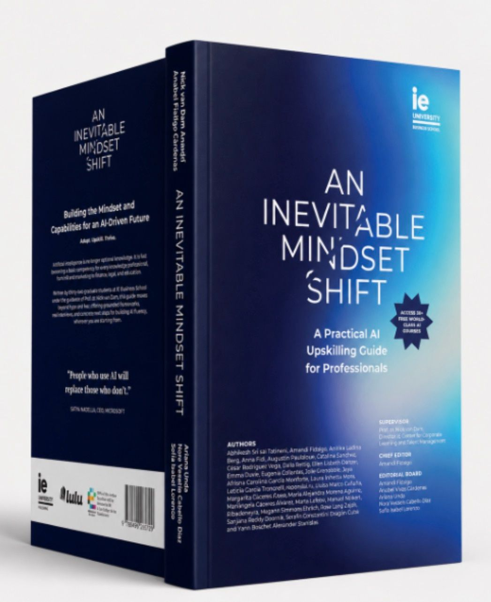
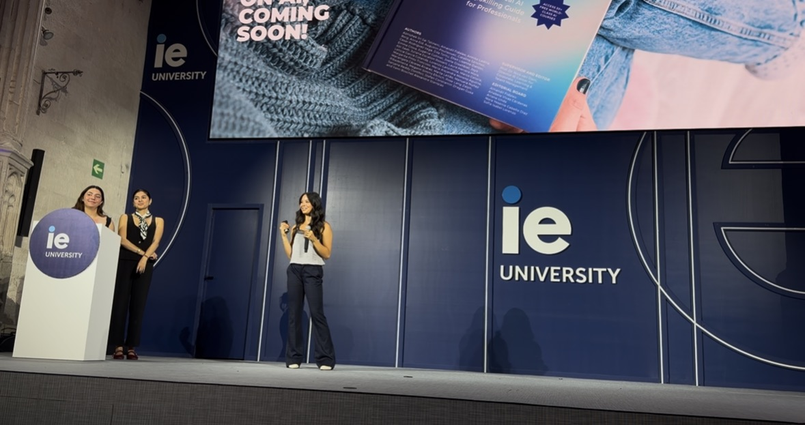

HR professional focused on talent management, people strategy, and organizational effectiveness — with client-facing consulting experience across international settings.
I have always believed that being uncomfortable in the unknown is the only way to truly grow and learn. Growing up in California, I was balancing competitive gymnastics, real responsibility at home, and academics all at once — that environment shaped me early and laid the foundation for everything that came after.
That drive followed me to UC San Diego, where I finished my B.S. in Psychology in two years, Magna Cum Laude, while working 25 hours a week caretaking and tutoring children with dyslexia.
My curiosity and desire for adventure prompted me to move across the world to IE Business School in Madrid — not just for the degree, but to immerse myself in something completely new, learn alongside people from different backgrounds and cultures, and understand how organizations operate beyond the world I already knew. It has been one of the best decisions I have made.
At IE, the learning has never stayed in the classroom. I have worked directly with real companies and real stakeholders, consulting on live organizational challenges where the answers were not handed to us and the work had genuine consequences. That is exactly the kind of environment I seek out.
I am drawn to HR because people are almost always the answer, and almost always the most overlooked part of the equation. I want to be in rooms where that is changing. I graduated in July 2026 and am looking for roles in talent management, organizational design, or HR strategy where I can keep growing, keep pushing myself, and help build environments where people genuinely thrive.
Live engagements with real stakeholders, run alongside coursework at IE Business School.


A practical, full-color AI upskilling guide for professionals, co-created with 32 graduate students in Talent Development & HR at IE Business School under the guidance of Prof. Nick van Dam.
As Chief Editor, I led the publication of this book from concept to print — coordinating editorial timelines across 28 student authors and cross-functional teams of researchers, designers, and fact-checkers, and managing a multi-round review process covering chapter structure, argumentation, flow, editing, and final proofreading to maintain quality and consistency across every chapter. I'm also a contributing author and served on the five-person Editorial Board.
"People who use AI will replace those who don't." — Satya Nadella, CEO, Microsoft
Every project below was built through hands-on application — case analyses, consulting simulations, diagnostic studies, and live deliverables — completed during the Master in Talent Development and Human Resources at IE Business School.
I graduated in July 2026 and am looking for roles in talent management, organizational design, or HR strategy. Reach out — I'd love to hear from you.